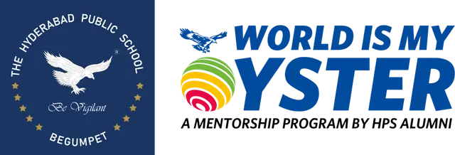

A Letter to Our Contributors
Dear Contributor,
We are happy to report that you have made a difference — to the school and to our wider ecosystem — through your support of the World is My Oyster programme. Your contributions — in cash (₹43 lakh) and in kind (55 alumni volunteers, 24 HPS staff, 30 mentor organisations and 25 role-model speakers) — have been critical to this progress. And yet, there are miles to go before we sleep.
This is a unique initiative that is constantly improving under the leadership of our alumni — powered by your donations, your expertise, your time and your networks. The effort has had the unconditional support of our Principal, Dr. Bali, the school leadership, and the Management Committee of the HPS Society.
This report provides a comprehensive overview of the progress made during the academic year 2025–26, across our key activities. A detailed programme note follows.
Miles to go before we sleep.
With warm regards,
The World is My Oyster Team
A Hyderabad Public School Alumni Initiative
2025–26 in Numbers
Funds & Endowment
Cash and in-kind contributions from our contributors and volunteers were the engine of this year's progress — building an endowment that will sustain the programme in perpetuity.
Raised ₹43.18 lakh to date (₹17.94L in 2023–24 and ₹25.25L in 2025–26), against a target of ₹1,000 lakh. Significant progress is under way toward a further ₹50 lakh this coming year.
Interest of ₹1,66,660 accrued to the endowment to date financed the salary of our Junior Programme Executive on an ongoing basis. Modest marketing and operating costs were also met from interest income.
Endowment Target & Budget
Governance-Board-approved budget · endowment sized at a post-tax IRR of 7%. Figures in ₹ lakh.
| Head | Endowment needed | Annual amount |
|---|---|---|
| Technology & AI Readiness | 170.00 | 11.9 |
| Human Resources | 135.00 | 9.5 |
| Student Support | 206.25 | 14.4 |
| Mental Wellness | 187.50 | 13.1 |
| Environment Awareness | 187.50 | 13.1 |
| Contingencies | 125.00 | 8.8 |
| Total | 1,011.25 | 70.8 |
The World is My Oyster team has been a pioneer in raising donations under the corporate CSR dispensation — a process that other school initiatives may now follow.
Governance
In line with our commitment to accountability, Oyster has formed a Governance Board bringing together the school leadership, the Society's Management Committee, and the programme's founding sponsors.
- School leadership — Dr. Bali & Ms. Sharma
- Management Committee — Mr. Jalan & Ms. Reddy
- Oyster sponsors — Messrs. Papali, Kabra, Vijayan & Naru
The charter defines oversight and approval functions and a fixed tenure for alumni representatives.
Representatives are drawn from the three founding sponsor groups — the HPS Bangalore alumni chapter, the December 1973 batch, and the 1983 batch — plus one from the founding team. The board has met three times since 2024 and meets two to three times a year.
Know Your Career
This year the programme made significant progress on two of its three core pillars. Know Your Career — our flagship — gave students a front-row seat to the real-world workings of a profession, through one-day internships, role-model talks, and a one-week internship pilot.
A · One-Day Internship Programme
Across three drives, 30 mentor organisations hosted Grade 9 and 10 students — 500 one-day internships spanning 19+ industry sectors — giving first-hand exposure to real workplaces and helping students make informed subject-grouping choices. We are grateful to the mentor organisations that gave their resources, time and interest so generously.
Samvad Partners · Care Hospitals · Invascent · Deloitte · Aragen Life Sciences · Fourth Partner Energy · Red Matter Technologies · T-Hub · Keus Automation · Golf Tripz · Doctor C · CVN Law
Dhruva Space · Arete Hospitals · Jayanti Reddy Designs · Darwinbox · MosChip Semiconductor · Labonel · Concu Food Products
Caspian Investments · Samvad Partners · Arete Hospitals · Continental Coffee · Aragen Life Sciences · Fourth Partner Energy
Semiconductor · Space Technology · Renewable Energy · Artificial Intelligence · Biotechnology Research · Impact Investing · Venture Capital
Medicine · Law · Engineering · Accounting & Consultancy · Entrepreneurship · Social Media Marketing · Food & Bakery · Sports Tourism
Role Model Talks
One of the most impactful strands of the year. Three sessions across Grades 9 and 10 exposed students to professionals from both traditional and emerging fields — with strong engagement throughout. Leadership: Ravi Kola ’73, Srikant Rajasekharuni, Sarath Naru ’73; Faculty — Ms. Priyanka Reddy; Coordination — Ms. Keerthana, Ms. Hill, Mr. Eashwar.
- Dr. Kapadia — Medicine
- Kishore Krishnamurthy — Photography
- Mani Shankar — Films
- Siddhartha V. — Hedge Funds
- Shujaat Ali — Law
- Gopi Krishna L. — Artificial Intelligence
- Srikant Rajasekharuni — Digital Marketing
- Yash Vardhan — Product Design
- Ekta Bhal — Law
- Kishore Krishnamurthy — Photography
- Tareena — Teaching
- Ram Manohar Reddy — Journalism
- Gopi Krishna L. — AI
- Dr. Kiran — Medicine
- Varun Aditya — Sports
- Srikant Rajasekharuni — Digital Marketing
- Nihal Kovvali — Law
- Dr. Kiran — Medicine
- Ismail Sharif — Wildlife Photography
- Capt. Harshak Reddy — Aviation
- Capt. Pankaj — Aviation
- Ameera Pasha — Law
- Siddhartha V. — Hedge Funds
- Shravya Shivan — Tennis
- Sumanth K. — Chartered Accountancy
- Exposure to a wide spectrum of careers — from Medicine, Law and Finance to AI, Product Design and Wildlife Photography.
- A deliberate balance between established professions and emerging, future-focused fields.
- Strong, enthusiastic engagement across both Grade 9 and Grade 10.
One-Week Internship Pilot
A pilot one-week project internship was completed successfully with two mentor organisations — Century Mattresses and Samvad Partners — to whom we extend our special thanks. Intended for Grades 11 and 12 who have chosen their subject grouping and want deeper, practical exposure to their area of interest, the pilot saw 20 students complete the project. The programme is under review for expansion — with two key considerations: integrating Artificial Intelligence exposure into project assignments, and appointing a dedicated Oyster programme lead to support scaling. Leadership: Uttam Malani & Ekta Bahl.
It was truly well-organised and thoughtfully conducted. He found it to be a great learning experience. We would be delighted to explore a collaboration with Meridian School to bring similar opportunities to our students.
HPS Parent · Lead Career Counsellor, Meridian Schools
Know Yourself
Designed to support students in self-discovery, emotional intelligence and career alignment, the Know Yourself pilot has been fully designed and is ready for launch. Progress was intentionally paced this year in the absence of a dedicated lead; with the leadership structure now strengthened, we are confident of an imminent rollout.
Hope Trust has been engaged as our expert partner. We place on record our thanks to Mrs. Rajeswari Luther, Director of Hope Trust and spouse of alum Rahul Luther ’73.
Alumni: Dr. Abhilash Raja ’05, Shubhlaxmi ’20, Sarath Naru ’73.
Faculty: Ms. Charlotte; counsellor Ms. Pranathi; Mr. Cyril.
Students: Mental Wellness Club — Veda ’26, Sharanya ’28.
- Mental Wellness Club ‘Soul Talk’ model — student- and counsellor-driven.
- Psychographic profiling & counselling for Grade 9 and 10 students.
- Finalise the pilot launch schedule with school and Oyster leads.
- Onboard the initial student cohort.
- Monitor outcomes and gather structured feedback.
- Develop a roadmap for wider rollout based on learnings.
Environment & Train the Trainer
Two forward-looking pillars have been envisioned this year, with expert partner organisations engaged and pilots taking shape for the 2026–27 calendar.
Know Your Environment
Partnered with ecology experts Nature Inspires India Pvt. Ltd., Bangalore.
Alumni: Srinivas Garudachar ’80, Ravi Kola ’73, Arjun Narne ’83. Faculty: Dr. Neeta Bisht (in-charge, ecology & environment) with Mr. Sudarshan, Ms. Usha Sudhir & Ms. Pratibha Dhal, co-heading with the HPS Eco & ESD Club.
- A weekly one-hour Friday ecology project is being envisaged.
- ‘Anveshana’ — making students practitioners of sustainability — pilots in 2026–27.
Train the Trainer
Partnership initiated with Centa, a Bangalore-based expert in teacher evaluation and development.
Alumni: Brian Papali ’69, Gopi Lingala ’95, Sarath Naru ’73. Faculty: Ms. Charlotte.
- A voluntary Centa teacher-evaluation pilot.
- A teacher support group — ‘Soul Talks’ on alternate Saturdays.
- AI-readiness pedagogy for the classroom age of AI.
AI Readiness
Given the rapid transformation of the world by AI, the World is My Oyster team launched an AI-readiness initiative to address an urgent need — preparing our students and teachers for what comes next.
The Governance Board and school leadership approved the urgent formation of a task force to propose a considered plan for the AI readiness of students and teachers. It brings together the school leadership, faculty, the Innovation Lab and external experts, and engages best-of-breed global partners for leading practices.
The team is raising ₹50 lakh to fund AI exposure and building — equipping students to learn about and build with AI, and to understand the rapidly transforming career landscape. We have received in-principle approval for a CSR contribution from a large corporate.
“The Human Edge”
The first in our series, recorded for the HPS ecosystem and to be shared on YouTube. The next talk is expected on the Hyderabad campus, on the recommendation of Dr. Bali and the school leadership. We place on record the time and effort of our panellists and opening speaker.
Organised by the HPS Bangalore alumni chapter — Uday Vijayan ’73, Srini Garudachar ’80, Tisma Jain ’23, Akshay ’02, Abhinay Chinnola ’06 and Sarath Naru ’73.
Behind the Programme
Two enabling functions keep the programme running — both delivered entirely through the volunteered time and personal resources of our alumni, with no paid team.
Marketing & Community
Communicating the various Oyster programmes to students, parents, staff and mentor organisations is a constant, essential activity. Our focus this year was to galvanize an active community around the programme.
We galvanized an active community using WhatsApp groups and the Skolaro school platform — keeping students, parents, staff and mentors connected and engaged throughout the year.
A dedicated WhatsApp broadcast group keeps the wider Oyster community in touch and delivers timely notifications on internships, talks and events.
Leadership. Uday Vijayan & Srikant Rajasekharuni, supported by OAR.
Technology
Running operations without confusion — matching students' interests to the options available, and coordinating with mentor organisations with student safety as the top priority — requires significant technology support.
We developed our own custom CRM to run campaigns for internships and role-model talks, collect and manage registrations, and gather structured feedback — giving the programme a single, reliable operational backbone.
Our website hpsoyster.com communicates all our live initiatives and houses every one of our activities — a single, public home for the programme.
Leadership. Srikant Rajasekharuni.
We remain deeply grateful for the trust and generosity of every contributor, in cash and in kind who gave their expertise, time and networks. We are at the cutting edge of AI readiness for schools anywhere — and we hope to reach not only the HPS system but also less-privileged schools. That ambition will need your continued support, in cash and in kind.
Time to take your first dip.
Our Contributors
With deep gratitude to the alumni, staff, parents, students and expert partners who gave their time, expertise and networks.
| Governance Board | ||
| Name | Year / Affiliation | Location |
|---|---|---|
| Dr. Skand Bali | Principal · Staff | Hyderabad |
| Ms. Amrita Chandra | Vice-Principal · Staff | Hyderabad |
| Ms. Nidhi Reddy | Management Committee | Hyderabad |
| Mr. Hemant Jalan | Management Committee | Hyderabad |
| Mr. Brian Papali | Sponsor rep · Bangalore | Bangalore |
| Mr. Uday Vijayan | Sponsor rep · 1973 | Bangalore |
| Mr. Ravi Kabra | Sponsor rep · 1984 | Hyderabad |
| Mr. Sarath Naru | Sponsor rep · Founding team | Bangalore |
| Mr. M. Subramanian | Director, OAR · Staff | Chennai |
| Know Your Career | ||
| Name | Year / Affiliation | Location |
|---|---|---|
| Ms. Priyanka Reddy | Career Counsellor · Faculty | Hyderabad |
| Ms. Prerna | Teacher Development · Faculty | Hyderabad |
| Uday Vijayan | Alumni · 1973 | Bangalore |
| Vijay Reddy | Alumni · 1973 | Mumbai |
| Srikant Rajasekharuni | Alumni · 2006 | Hyderabad |
| Ravi Kabra | Alumni · 1984 | — |
| Jayaram Krishnan | Alumni · 1986 | Bangalore |
| Ramkumar Seshu | Alumni · 1977 | Bangalore |
| Brian Papali | Alumni · 1969 | Bangalore |
| A. J. Akshay | Alumni · 2002 | Bangalore |
| Abhinay Chinola | Alumni · 2008 | Bangalore |
| Sanjay Gadhalay | Alumni · 1982 | Hyderabad |
| Shubhlaxmi | Alumni · 2020 | Bangalore |
| Uttam Malani | Alumni · 2001 | Hyderabad |
| Suraj Nair | Alumni · 1991 | Bangalore |
| Akhil Sharma | Alumni · 2000 | Bangalore |
| Himanshu Tambe | Alumni · 1983 | Hyderabad |
| Yashovardhan Shetty | Alumni · 2020 | Hyderabad |
| Ekta Bhal | Parent | Hyderabad |
Our Contributors continued
| Know Yourself | ||
| Name | Year / Affiliation | Location |
|---|---|---|
| Ms. Charlotte Raj | Psychology & Counselling Head · Staff | Hyderabad |
| Ms. Shamala | Psychology · Staff | Hyderabad |
| Ms. Pranathi | Middle School Counsellor · Staff | Hyderabad |
| Mr. Cyril | Staff | Hyderabad |
| Mrs. Rajeswari Luther | Hope Trust · External | Hyderabad |
| Ms. Shruthi | Hope Trust · External | Hyderabad |
| Veda | Student · Mental Wellness Club ’26 | Hyderabad |
| Saranya Varshney | Student · Mental Wellness Club ’28 | Hyderabad |
| Dr. Abhilash Raja | Alumni · 2002 | Bangalore |
| Brian Papali | Alumni · 1969 | Bangalore |
| Shubhlaxmi | Alumni · 2020 | Bangalore |
| Ramendra Kumar | Alumni · 1978 | Bangalore |
| Sanjiv Sarin | Alumni · 1970 | Bangalore |
| Ramkumar Seshu | Alumni · 1977 | Bangalore |
| Jayaram Krishnan | Alumni | Bangalore |
| Know Your Environment | ||
| Name | Year / Affiliation | Location |
|---|---|---|
| Dr. Neeta Bisht | Senior School Coordinator · Staff | Hyderabad |
| Mr. Sudarshan | Eco & Env · Staff | Hyderabad |
| Ms. Pratibha Dhal | Eco & Env · Staff | Hyderabad |
| Ms. Usha Sudheer | Eco & Env · Staff | Hyderabad |
| Mr. Srivatsa Govinda Raju | Nature Inspires India · External | Bangalore |
| HPS Eco & ESD Clubs | Students | Hyderabad |
| Srini Garudachar | Alumni · 1980 | Bangalore |
| Ravindranath Kola | Alumni · 1973 | Hyderabad |
| Arjun Narne | Alumni · 1984 | Hyderabad |
| J. S. Ravichandran | Alumni · 1973 | Hyderabad |
| Shreeram M. B. | Alumni · 1996 | Bangalore |
Our Contributors continued
| Train the Trainer | ||
| Name | Year / Affiliation | Location |
|---|---|---|
| Ms. Prerna | Teacher Development · Faculty | Hyderabad |
| Mr. Rahul Chowdhury | Centa · External | Bangalore |
| Ms. Ramya Krishnan | Centa · External | Bangalore |
| Dr. Abhilash Raja | Alumni · 2006 | Bangalore |
| Brian Papali | Alumni · 1969 | Bangalore |
| Gopi Lingala | Alumni · 1998 | Hyderabad |
| General Support | ||
| Name | Year / Affiliation | Location |
|---|---|---|
| Anirban | Alumni · 2006 | Bangalore |
| A. J. Akshay | Alumni · 2002 | Bangalore |
| Tej Babu | Alumni · 1973 | Hyderabad |
| Chitrajit Cariappa | Alumni · 1972 | Bangalore |
| Abhinay Chinola | Alumni · 2008 | Bangalore |
| Krishnan | Alumni · 1973 | Hyderabad |
| Shubhlaxmi | Alumni · 2020 | Bangalore |
| Swati Malik | Alumni · 1996 | Bangalore |
| Vijay Mohan | Alumni · 1989 | Bangalore |
| Ram Nagarajan | Alumni · 1980 | Bangalore |
| Akhil Sharma | Alumni · 2002 | Bangalore |
| Suheim & Paula Sheikh | Alumni · 1981 | Hyderabad |
Our Contributors continued
| AI Readiness | ||
| Name | Year / Affiliation | Location |
|---|---|---|
| Gopi Lingala | Alumni · 1998 | Hyderabad |
| Yashovardhan Shetty | Alumni · 2020 | Hyderabad |
| Uday Vijayan | Alumni · 1973 | Bangalore |
| Srikant Rajasekharuni | Alumni · 2004 | Hyderabad |
| Sanjay Gadhalay | Alumni · 1982 | Hyderabad |
| Yuvraj | Alumni · 2021 | Hyderabad |
| Uttam Malani | Alumni · 2001 | Hyderabad |
| Sarath Naru | Alumni · 1973 | Hyderabad |
| Prof. Anil Ananthaswamy | IIT-M · External | Bangalore |
| Ms. Ramya Venkataraman | Centa · External | Bangalore |
| Mr. Rahul Chaudhury | Centa · External | Bangalore |
| Dr. Chaitanya Baru | NSF, USA · External | — |
| Dr. Bisht | Faculty | Hyderabad |
| Ms. Sonali | IGSC · Faculty | Hyderabad |
| Ms. Kaur | Sr School Coordinator · Faculty | Hyderabad |
| Ms. Radhika | Comp Sc Head · Faculty | Hyderabad |
| Mr. Ankur Khare | Innovation Lab · Faculty | Hyderabad |
| Ms. Naomi Hill | OAR | Hyderabad |
| Mr. Eashwar | OAR | Hyderabad |
| Ms. Keerthana T | OAR | Hyderabad |
| Technology, Marketing & Fund Raising | ||
| Name | Year / Affiliation | Location |
|---|---|---|
| Srikant Rajasekharuni | Alumni · 2004 | Hyderabad |
| Uday Vijayan | Alumni · 1973 | Bangalore |
| Phalgun Reddy | Alumni · 2002 | Bangalore |
| Ganesh Parameswaran | Alumni · 1978 | Hyderabad |
| Gopi Lingala | Alumni · 1998 | Hyderabad |
| Sanjay Gadhalay | Alumni · 1982 | Hyderabad |
| Roopa Obulreddigari | Alumni · 2005 | Hyderabad |
| Ravi Kabra | Alumni · 1984 | Hyderabad |
| Brian Papali | Alumni · 1969 | Bangalore |
| Suraj Nair | Alumni · 1991 | Bangalore |
| Ms. Naomi Hill | OAR | Hyderabad |
| Mr. Eashwar | OAR | Hyderabad |
Our Contributors continued
| HPS Staff & Office of Alumni Relations | ||
| Name | Year / Affiliation | Location |
|---|---|---|
| Dr. Bali | Principal | Hyderabad |
| Mrs. Sharma | Vice-Principal | Hyderabad |
| Dr. Neeta Bisht | Senior School Coordinator | Hyderabad |
| Ms. Sonali Roy Choudhury | IGSC Coordinator | Hyderabad |
| Ms. Kaur | Senior School Coordinator | Hyderabad |
| Ms. Radhika | Comp Science Head | Hyderabad |
| Mr. Ankur Khare | Innovation Lab Head | Hyderabad |
| Ms. Saborni Ghosh | Grade 8 Coordinator | Hyderabad |
| Mr. Abdul Rahim | Grade 9 Coordinator | Hyderabad |
| Ms. Latha Shree | Grade 10 Coordinator | Hyderabad |
| Ms. Nirupa | Grade 11 Coordinator | Hyderabad |
| Ms. Sumeeta | Grade 12 Coordinator | Hyderabad |
| Ms. Charlotte Raj | Psychology & Counselling Head | Hyderabad |
| Ms. Priyanka Reddy | Career Counsellor | Hyderabad |
| Ms. Prerna | Teacher Development | Hyderabad |
| Ms. Shamala | Psychology | Hyderabad |
| Ms. Pranati | Middle School Counsellor | Hyderabad |
| Mr. Cyril | Psychology | Hyderabad |
| Mr. Sudarshan | Eco & Env | Hyderabad |
| Ms. Pratibha Dhal | Eco & Env | Hyderabad |
| Mr. M. Subramaniam | OAR | Chennai |
| Ms. Naomi Hill | OAR | Hyderabad |
| Mr. Eashwar | OAR | Hyderabad |
| Ms. Keerthana T | OAR | Hyderabad |
— and the many other alumni, staff and well-wishers whose support made this year possible.
One-Day Internships
The mentor organisations that hosted students across the year's three internship drives, with the sectors and experiences each opened up.
| September 2025 · 12 organisations | ||
| Mentor Organisation | Sector | What Students Explored |
|---|---|---|
| Samvad Partners | Law · Mediation & Dispute Resolution | Corporate law, dispute resolution, legal advisory, and the workings of a professional law firm. |
| Care Hospitals | Healthcare · Multi-specialty Hospitals | Advanced healthcare delivery, hospital administration, clinical specialties, and patient-centred care. |
| Invascent | Private Equity · Life Sciences Investment | Private-equity investing in healthcare and life sciences, deal evaluation, portfolio management and growth strategy. |
| Deloitte | Professional Services · Consulting, Audit, Tax & Advisory | Consulting, auditing, tax, risk advisory, and business problem-solving through professional services. |
| Aragen Life Sciences | Contract R&D · Biopharma Manufacturing | Contract research, drug discovery, pharmaceutical development, and biopharmaceutical manufacturing. |
| Fourth Partner Energy | Renewable Energy · Solar Power | Renewable-energy solutions, solar power systems, sustainability initiatives, and clean-energy technology. |
| Red Matter Technologies | Marketing · Advertising & Brand Strategy | Marketing strategy, branding, digital communication, consumer insight, and creative campaign development. |
| T-Hub | Startup Incubator · Innovation | Entrepreneurship, startup incubation, innovation ecosystems, mentoring, and emerging technologies. |
| Keus Automation | Smart Home Automation · Technology | Smart-home automation, IoT, product innovation, and intelligent building solutions. |
| Golf Tripz | Travel · Tourism · Sports | Sports tourism, travel planning, event management, customer experience, and hospitality operations. |
| Doctor C | Diagnostics & Preventive Healthcare | Preventive healthcare, diagnostic services, health technology, and wellness-focused medical solutions. |
| CVN Law | Legal Services · Corporate Law | Corporate legal practice, compliance, contracts, litigation support, and professional legal services. |
One-Day Internships continued
| December 2025 · 7 organisations | ||
| Mentor Organisation | Sector | What Students Explored |
|---|---|---|
| Dhruva Space | Space Technology · Satellite Engineering | Satellite technology, spacecraft development, the commercial space industry, and careers in space engineering. |
| Arete Hospitals | Healthcare · Multi-specialty Hospitals | Hospital operations, patient-care systems, healthcare management, and multidisciplinary medical roles. |
| Jayanti Reddy Designs | Fashion · Couture | Fashion design, couture, garment production, brand development, and the creative design process. |
| Darwinbox | Human Capital Management · Software | HR technology (HRTech), software development, digital workplace solutions, and people management. |
| MosChip Semiconductor | Semiconductor · Silicon & Product Engineering | Semiconductor design, embedded systems, chip engineering, product development, and electronics innovation. |
| Labonel | Fine Baking · Beverage | Premium bakery production, food-quality standards, product innovation, and bakery business operations. |
| Concu Food Products | Food & Beverage | Food manufacturing, quality assurance, production processes, packaging, and supply-chain management. |
| May 2026 · 6 organisations | ||
| Mentor Organisation | Sector | What Students Explored |
|---|---|---|
| Caspian Investments | Impact Investing · Financial Services | Impact investing, financial analysis, sustainable finance, and how investment creates social and economic value. |
| Samvad Partners | Law · Mediation & Dispute Resolution | Corporate law, dispute resolution, legal advisory, and the workings of a professional law firm. |
| Arete Hospitals | Healthcare · Multi-specialty Hospitals | Hospital operations, patient-care systems, healthcare management, and multidisciplinary medical roles. |
| Continental Coffee | Food & Beverages · Coffee Manufacturing & Export | Coffee sourcing, manufacturing, quality control, export operations, branding, and the global beverage industry. |
| Aragen Life Sciences | Contract R&D · Biopharma Manufacturing | Contract research, drug discovery, pharmaceutical development, and biopharmaceutical manufacturing. |
| Fourth Partner Energy | Renewable Energy · Solar Power | Renewable-energy solutions, solar power systems, sustainability initiatives, and clean-energy technology. |
Role Model Talks
The speakers who addressed Grades 9 and 10 across three sessions, spanning established professions and emerging fields.
| Session 1 · 11 December 2025 · Grade 9 | |||
| Speaker | Alumni / Non-alumni | Credentials | Career Field |
|---|---|---|---|
| Dr. Kapadia | Alumni | Medicine | |
| Kishore Krishnamurthy | Alumni | Photography | |
| Mani Shankar | Alumni | Films | |
| Siddhartha V. | Alumni | Hedge Fund Management | |
| Shujaat Ali | Alumni | Law | |
| Gopi Krishna L. | Alumni | Artificial Intelligence | |
| Srikant Rajasekharuni | Alumni | Digital Marketing | |
| Session 2 · 31 March 2026 · Grade 9 | |||
| Speaker | Alumni / Non-alumni | Credentials | Career Field |
|---|---|---|---|
| Yash Vardhan | Alumni | Product Design | |
| Ekta Bhal | Parent of student | Law | |
| Kishore Krishnamurthy | Alumni | Photography | |
| Tareena | Alumni | Teaching | |
| Ram Manohar Reddy | Non-alumni | Journalism | |
| Gopi Krishna L. | Alumni | Artificial Intelligence | |
| Dr. Kiran | Alumni | Medicine | |
| Varun Aditya | Alumni | Sports | |
| Srikant Rajasekharuni | Alumni | Digital Marketing | |
| Nihal Kovvali | Alumni | Law | |
| Session 3 · 16 April 2026 · Grade 10 | |||
| Speaker | Alumni / Non-alumni | Credentials | Career Field |
|---|---|---|---|
| Dr. Kiran | Alumni | Medicine | |
| Ismail Sharif | Alumni | Wildlife Photography | |
| Capt. Harshak Reddy | Alumni | Aviation | |
| Capt. Pankaj | Alumni | Aviation (Pilot) | |
| Ameera Pasha | Alumni | Law | |
| Siddhartha V. | Alumni | Hedge Fund Management | |
| Shravya Shivan | Alumni | Sports (Tennis) | |
| Sumanth K. | Alumni | Chartered Accountancy | |